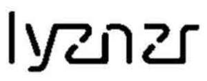

Trade Mark Journal No.2025/019 9 May 2025
UK00004139201 19 December 2024 (9,41,42,45)
Mark 1

Mark 2
LYZNZR
- Class 9
- User authentication systems; authentication systems for asset management, supply chain and audit trail; transaction individuation, accreditation and marking of physical, digital and other media; transaction individuation systems; biometric identification systems; authentication devices; AI agent software; personal authentication devices and apparatus, including fingerprint authentication devices and apparatus; biometric authentication devices; biometric readers; software, hardware, electronic and analogue devices for the identification and authentication of users, for transaction individuation, accreditation and for marking of physical, digital and other media; software, hardware, databases, electronic and analogue devices for marking and identifying supply chain and for biometric systems for the identification and authentication of users; biometric software; biometric scanners; biometric locks; biometric access control systems; RFIDs; integrated circuit cards; computer software for use in access control, electronic individual verification systems and biometric identification; apparatus and instruments featuring digital or analogue identification functionality, for use in connection with shipping, importing, exporting, tracking, identifying, authenticating, maintaining, marketing, buying, selling, regulating, supply chain management, asset management, and/or legal compliance; downloadable software, hardware, digital media, authentication tags, codes, labels and other authentication devices for use in connection with supply chain management, asset management, accreditation, marking, individuation and/or legal compliance; a system comprised of hardware, software and/or authentication devices for use in personal verification, supply chain marking and identification, asset management, audit trails and/or in relation to shipping, importing, exporting, tracking, identifying, authenticating, maintaining, marketing, buying, selling, regulating the provision of goods or services and/or for use in connection with counterfeit detection and prevention, anti-counterfeiting law enforcement, customer relationship management, supply chain management and/or legal compliance; parts and fittings for any or all of the aforesaid goods in this Class.
- Class 41
- Accreditation; accreditation for online software applications; accreditation using biometric hardware and software technology for e-commerce transactions; accreditation, marking services for asset management, supply chain and audit trail.
- Class 42
- Authentication services; identification verification services; transaction individuation; marking of physical, digital and other media; biometric identification and authentication services; providing user authentication services, marking using biometric hardware and software technology for e-commerce transactions; providing user authentication services, individuation and marking for online software applications; Software as a service [SaaS]; providing a platform for the deployment, access, and management of autonomous AI agents; design and development of computer software and applications for the deployment, access, and monetisation of autonomous AI agents; providing authentication services in online transactions and e-commerce transactions; providing authentication, transaction individuation and marking services for asset management, supply chain and audit trail; provision, design, development and maintenance of electronic verification systems, access control and biometric identification; technical research relating to identification systems, transaction individuation, marking and accreditation; scientific and technical services in the field of security, access, authorization, authentication encryption, and identification data and systems; consultancy, advisory and information services relating to the aforesaid; scientific and technological services; research and design.
- Class 45
- Licensing services; licensing of intellectual property; technology licensing services; legal services; information, advisory and consultancy services relating to all the aforesaid.
RealRiffs Ltd
Representative: Mathys & Squire LLP